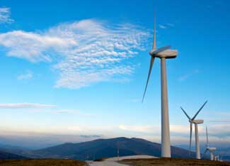

The U.S. wind energy industry installed 1,400 megawatts (MW) of new wind power capacity during the first quarter of 2008, according to the American Wind Energy Association (AWEA). With more than 4,000 MW of additional wind power capacity now under construction, the industry is on pace to meet or exceed last year's record installed capacity of 5,249 MW.
More than half of the new capacity was built in Texas, including the largest new facility, the 209-MW Roscoe Wind Farm, which is located about 50 miles west of Abilene. The largest new facility under construction is the 400-MW Fowler Ridge Wind Farm in Indiana, located 90 miles northwest of Indianapolis. That project and the nearby 130.5-MW Benton County Wind Farm will be the first major wind facilities in Indiana.
But despite the wind industry's current breakneck pace and geographical expansion, AWEA warns that construction could stall next year if the federal production tax credit is not renewed. The tax credit is the primary federal incentive for wind power production and is set to expire at the end of the year, which could result in a rush to complete the current projects before the year's end.
The AWEA also notes that more wind turbine components are now being manufactured in the United States. At least 17 manufacturing facilities were either brought online or expanded in 2007 and early 2008, and over the past three years the percentage of U.S.-made components has increased from less than 30 percent to about 50 percent.
That trend looks likely to continue, as Siemens has announced plans to double its wind blade manufacturing capacity in Iowa, while Vestas Wind Systems plans to build a manufacturing plant for wind turbine towers in Colorado. Siemens just opened its Iowa facility in 2007, and the planned expansion will add another 200 jobs at the plant. Likewise, Vestas just opened a wind blade manufacturing plant in Colorado, and is now "resolved to build the world's largest tower factory" in the same state. The factory will require an investment of nearly $250 million, and when it is completed in mid-2010, it will convert 200,000 metric tons of steel into about 900 towers each year, employing about 400 people.
According to a new U.S. Department of Energy report, wind power could provide 20 percent of U.S. electricity needs by 2030. The report identifies the steps that need to be addressed to reach the 20 percent goal, including reducing the cost of wind technologies, building new transmission infrastructure, and enhancing domestic manufacturing capability. The report was produced by DOE and its National Renewable Energy Laboratory, Lawrence Berkeley National Laboratory, and Sandia National Laboratories with the assistance of AWEA, engineering consultants from Black and Veatch Corp., and more than 50 energy organizations and corporations.
According to the report, reaching the 20 percent goal will require boosting wind power from its current generating capacity of 16.8 gigawatts (GW) to 304 GW in 2030, an 18-fold increase. Despite the magnitude of that challenge, most of the report's key findings are encouraging. Notably, the report concludes that 20 percent wind power can be reliably integrated into the grid at an additional cost of less than 0.5 cents per kilowatt-hour. In addition, the demand for copper, fiberglass and other raw materials needed to build the wind power facilities will not be prohibitive to reaching the 20 percent goal.
The report does identify several challenges that will need to be overcome. Achieving 20 percent wind power by 2030 will require that the annual installations of wind power increase threefold, from today's 2,000 annual turbine installations to almost 7,000 per year by 2017. Also, new transmission lines will be needed to deliver power from the most productive wind resource sites.
But between now and 2030, wind power will have avoided the emission of 7.6 gigatons of carbon dioxide, the leading global warming pollutant. The 304 GW of wind power would then avoid 825 million metric tons of carbon dioxide emissions each year thereafter. For comparison, the United States currently emits about 6 billion metric tons of carbon dioxide annually.
Beyond reducing greenhouse gas emissions, the accelerated wind power effort would support roughly 500,000 U.S. jobs and generate more than $1.5 billion in annual revenue for local communities.
Reprinted from EERE Network News, a free newsletter of the U.S. Department of Energy.
20% Wind Energy by 2030: Increasing Wind Energy’s Contribution to U.S. Electricity Supply (PDF file)
AWEA first quarter of 2008 market report (PDF file)
U.S. Wind Energy Projects: learn about current and future wind energy projects in your state.
Former Texas Oilman Pursues the World's Largest Wind Power Plant
|
 RAFA IRUSTA/ISTOCKPHOTO With the right policies and investments, wind energy could account for 20 percent of American electricity usage by 2030. |
|
|